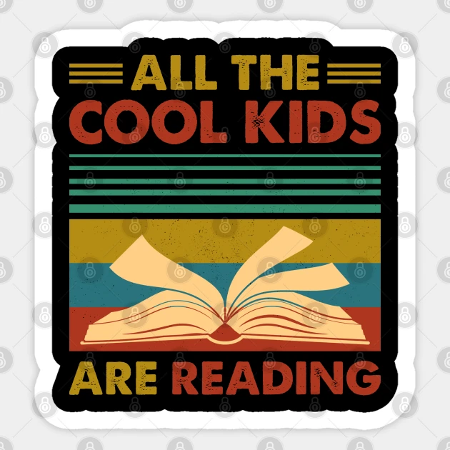

This was a fun and straightforward projet where we required to do build ruby rails project.
The user just has to put in the city's weather they are searching for and it will display the relevant weather information
This was different to the ruby project as that was just a backend and kept simple with a series of questions.
i used javascript and ruby for tha backend as this is what i know best.
.
If you would like more information on what a gemfile is, then please check out this link. click me!
A little funny motivation that keeps me going
food for thought!

Although Ruby language is on a decline, a lot of of start ups use ruby when building thier applications
Ruby is more backend and is interesting to see how it all comes together.
scraping concept for me was a new one and quite interesting.
I would like to make a website for music events in the sydney area using a scraper. My preffrerd language is python, which is a very easy and fun to use language.
The interesting part of this project was to understand how the functions work together to form the repsonses for the information to be displayed.